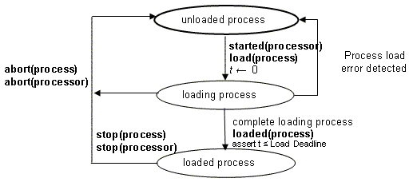

Previous
Next
Previous
Next 
| 5.5 Processes |
A
process represents a virtual address space. The Runtime_Protection process property
indicates whether this virtual address space is runtime protected, i.e., it represents a space
partition unit whose boundaries are enforced at runtime. The virtual address space contains the
program formed by the source text associated with the process and its subcomponents. A
complete implemenation of a process must contain at least one thread or thread group
subcomponent.
Legality
Rules
|
Category
|
Type
|
Implementation
|
|
Process
|
Features:
Flow specifications: yes
Properties: yes
|
Subcomponents:
Subprogram calls: no
Connections: yes
Flows: yes
Modes: yes
Properties: yes
|
A
process component type can contain port, port group, provides and requires data access, and
server subprogram declarations. It can also contain flow specifications and property associations.
A
process component implementation can contain data, thread, and thread group declarations.
A
complete process component implementation must contain at least one thread subcomponent
or one thread group subcomponent.
A
process implementation can contain a connections subclause, a flows subclause, a modes
subclause, and a properties subclause.
The
complete source text associated with a process component must form a complete and legal
program as defined in the applicable source language standard. This source text shall include
the
source text that corresponds to the complete set of subcomponents in the process’s containment
hierarchy along wth the data and subprograms that are referenced by required subcomponent
declarations.
Standard
Properties
--
Runtime enforcement of virtual address space boundary
Scheduling_Protocol:
list of Supported_Scheduling_Protocols
--
Properties related to source text
Source_Text: inherit list
of aadlstring
Source_Language:
Supported_Source_Languages
--
Properties related to virtual address space loading
Load_Time:
Time_Range
Load_Deadline:
Time
--
Inhertable thread properties
Synchronized_Component: inherit aadlboolean => true
Active_Thread_Handling_Protocol:
inherit Supported_Active_Thread_Handling_Protocols
=> value(Default_Active_Thread_Handling_Protocol)
Period: inherit
Time
Deadline:
Time => inherit value(Period)
--
Properties specifying constraints memory binding
Allowed_Processor_Binding_Class:
inherit list of classifier
(processor, system)
Allowed_Processor_Binding: inherit list of reference
(processor,
system)
Actual_Processor_Binding: inherit reference
(processor)
Allowed_Connection_Binding_Class:
inherit list of classifier(processor, bus,
device)
Allowed_Connection_Binding: inherit list of reference
(bus, processor,
device)
Actual_Connection_Binding: inherit reference
(bus, processor, device)
Allowed_Memory_Binding_Class:
inherit list of
classifier (memory, system, processor)
Allowed_Memory_Binding: inherit
list of reference (memory, system,
processor)
Not_Collocated: list of reference
(data, thread, process, system,
connections)
Actual_Memory_Binding: inherit reference
(memory)
Semantics
Every
process has its own virtual address space. This address space provides access to source
code and data associated with the process and all its contained components.
Threads
contained in a process execute within the virtual address space of the process. If the
Runtime_Protection
property value is true, the virtual address space boundaries of the
process are enforced for all contained threads at runtime.
A
process may contain mode declarations. In this case, each mode can represent a different
configuration of contained threads, their connections, and mode-specific property associations.
The transition between modes is determined by the mode transition declarations and is triggered
by the arrival of events.
The
associated source text for each process is compiled and linked to form binary images in
accordance with the applicable source language standard. These binary images must be loaded
into memory before any thread contained in a process can execute, i.e., enter its perform thread
initialization state.
The
time to load binary images into the virtual address space of a process is bounded by the
Load_Deadline
and Load_Time
properties. The failure to meet these timing requirements is
considered an error.
The
process states, transitions, and actions are illustrated in Figure 8. Once processors of an
execution platform are started, binary images making up the virtual address space of processes
bound to the processor are ready to be loaded. Loading may take zero time for binary images
that have been preloaded in ROM, PROM, or EPROM. Completion of loading, which is indicated
by loaded(process), triggers threads to be initialized (see Figure 5).
A
process, i.e., its contained threads, can be stopped (also known as a deferred abort), which is
indicated by stop(process). A process is considered stopped when all threads of the process
are
halted, are awaiting a dispatch, or are not part of the current mode. When a process is stopped,
each of its threads is given a chance to execute its finalize entrypoint.
A
process, i.e., its contained threads, can be aborted, which is indicated by abort(process).
In
this case, all contained threads terminate their execution immediately and release any resources
(see Figure 5, Figure 6, and Figure 7).

Figure
8 Process States and Actions
Processing
Requirements and Permissions
A
method of implementation must link all associated source text for the complete set of
subcomponents of a process, including the process component itself and all actual
subcomponents specified for required subcomponents. This set of source compilation units must
form a single complete and legal program as defined by the applicable source language standard.
Linking of this set of source compilation units is performed in accordance with the applicable
source language standard for the process.
If
the applicable source language standard permits a mixture of source languages, then
subcomponents may have different source language property values.
This
standard permits dynamic virtual memory management or dynamic library linking after
process loading has completed and thread execution has started. However, a method for
implementing a system must assure that all deadline properties will be satisfied to the required
level of assurance for each thread.
NOTES:
An AADL process represents only a virtual address space and requires at least
one explicitly declared
thread subcomponent in order to be executable. The explicitly declared thread in AADL allows for
unambiguous specification of port connections to threads. In contrast, a POSIX process represents
both a protected address space and an implicit thread.